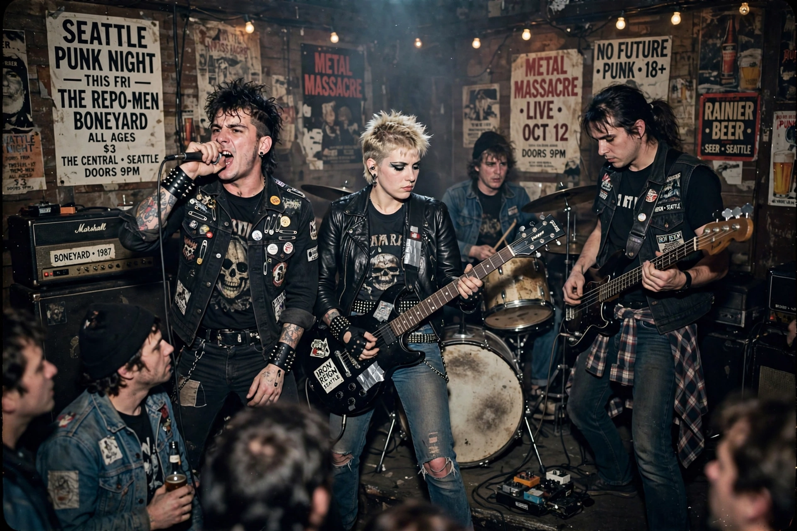

| Green River | |
|---|---|
 | |
| Origin | Seattle, Washington, U.S. |
| Years active | 1984–1988 (reunions 1993, 2008–09, 2025) |
| Genres | Grunge, punk rock, alternative metal |
| Labels | Homestead, Sub Pop |
| Members | Mark Arm, Steve Turner, Jeff Ament, Stone Gossard, Alex Vincent, Bruce Fairweather |
Green River was an American rock band formed in Seattle, Washington, in 1984. Frequently cited as one of the first grunge bands, the group took its name from the Green River and the serial killer Gary Ridgway, known as the Green River Killer. Although the band had little commercial impact during its lifetime, its members went on to form Mudhoney, Mother Love Bone and Pearl Jam, making Green River a pivotal ancestor of the Seattle scene.
Green River formed from the remnants of local punk bands Mr. Epp and the Calculations, the Limp Richerds and Deranged Diction. Vocalist Mark Arm and guitarist Steve Turner joined bassist Jeff Ament, guitarist Stone Gossard and drummer Alex Vincent. The band's 1985 EP Come on Down, released on Homestead Records, is regarded as an early grunge record, mixing hardcore punk with the heavy metal of Black Sabbath and the glam of Aerosmith.
The EP Dry as a Bone (1987) was the second release on the Sub Pop label, whose promotional copy famously described the band's sound as "ultra-loose grunge". Green River's only full-length album, Rehab Doll, followed in 1988.
Internal divisions over direction — Ament and Gossard favoured a more commercial sound, Arm and Turner a more independent one — split the band in 1988. Arm and Turner formed Mudhoney; Ament, Gossard and Fairweather joined Andrew Wood in Mother Love Bone, which evolved into Pearl Jam after Wood's death. Green River reunited for shows in 2008–09 and again in 2025.
Mudhoney · Pearl Jam · Pacific Northwest · Melvins
From Wikipedia, the free encyclopedia (recreated from memory).